2026-04-23
The physical surface of the Earth is irregular — mountains, valleys, ocean trenches.
We cannot define coordinates directly on this surface.
We need a simpler model.
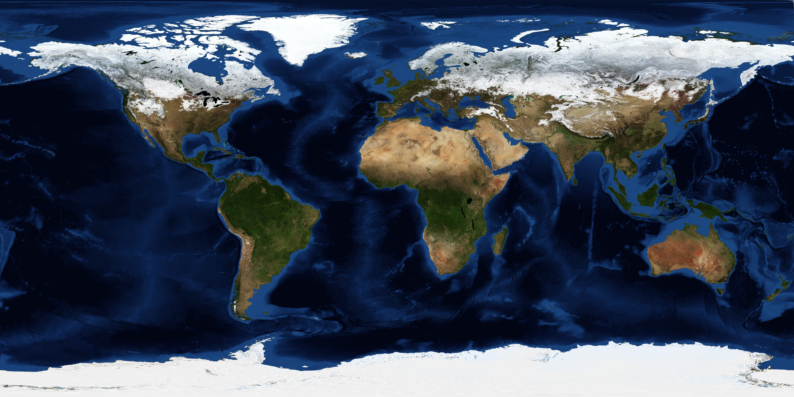
Source: https://science.nasa.gov/earth/earth-observatory/blue-marble-next-generation/
The geoid is the shape the ocean would take under gravity alone — no currents, no wind, no temperature differences.
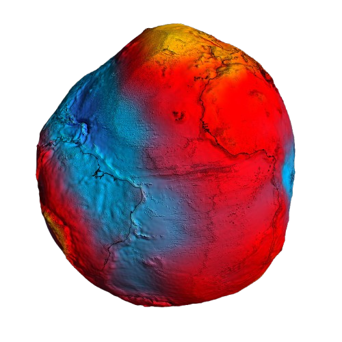
Source: https://www.esa.int/ESA_Multimedia/Images/2011/03/New_GOCE_geoid
An ellipsoid (oblate spheroid) — defined by just two parameters.
Smooth, mathematically simple, good enough for horizontal coordinates.
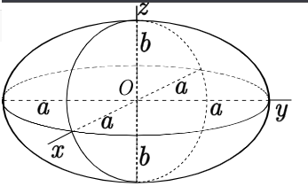
Source: Wikipedia commons
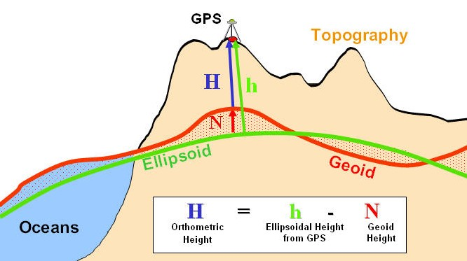
Source: https://link.springer.com/article/10.1007/s12517-024-11884-w?fromPaywallRec=true#Fig1
A set of rules for assigning numbers to points.
Purely abstract — no connection to the Earth yet.
Every coordinate system defines:
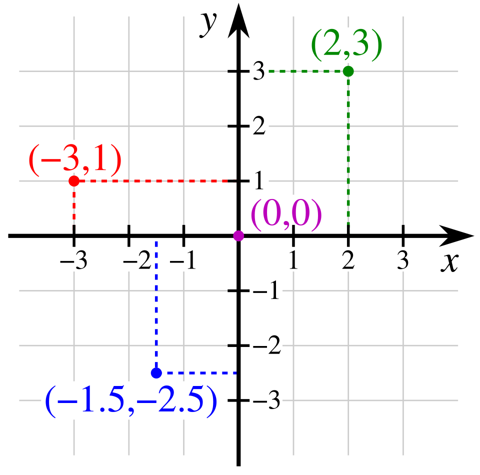
The same point on Earth can be described using different coordinate systems.
We now look at the main types.
On a sphere, position is defined by two angles:
On a sphere, the surface normal passes through the centre — latitude has only one definition.
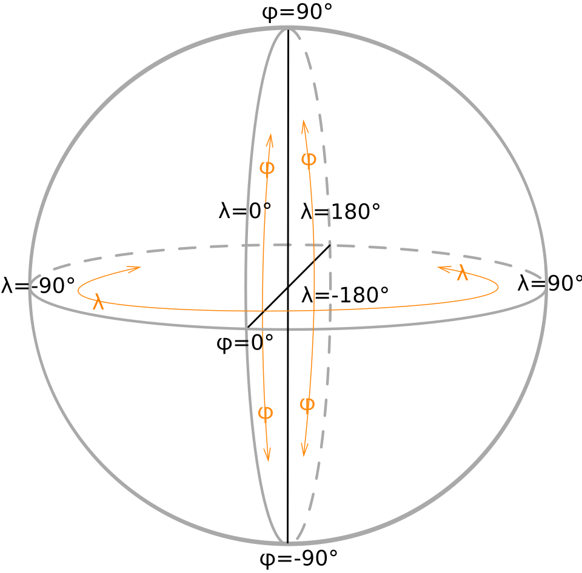
Source: Wikipedia commons
On an ellipsoid, the surface normal does not pass through the centre.
This creates two different definitions of latitude:
They differ by up to ~11.5 arc-minutes (~21 km) at 45°.
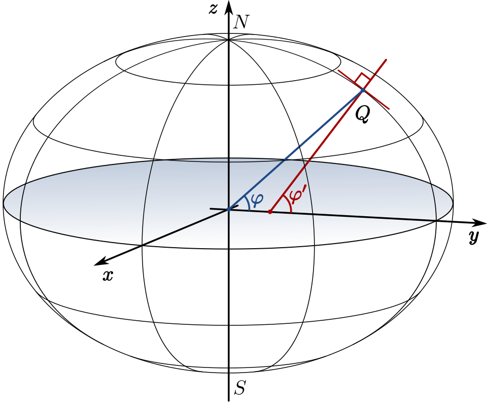
Source: Wikipedia commons
| Coordinate | Symbol | Range |
|---|---|---|
| Geodetic latitude | \(\varphi\) | −90° to +90° |
| Geodetic longitude | \(\lambda\) | −180° to +180° |
| Ellipsoidal height | \(h\) | metres above ellipsoid |
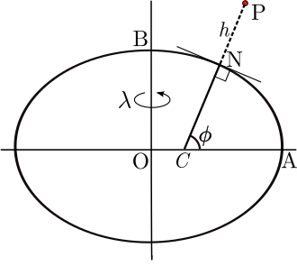
Source: Wikipedia commons
Origin at Earth’s centre of mass. Three straight-line axes.
| Axis | Points toward |
|---|---|
| X | Equator ∩ Prime Meridian |
| Y | Equator ∩ 90°E |
| Z | North Pole |
Units: metres. No ellipsoid needed.
Used in GNSS processing and satellite geodesy.
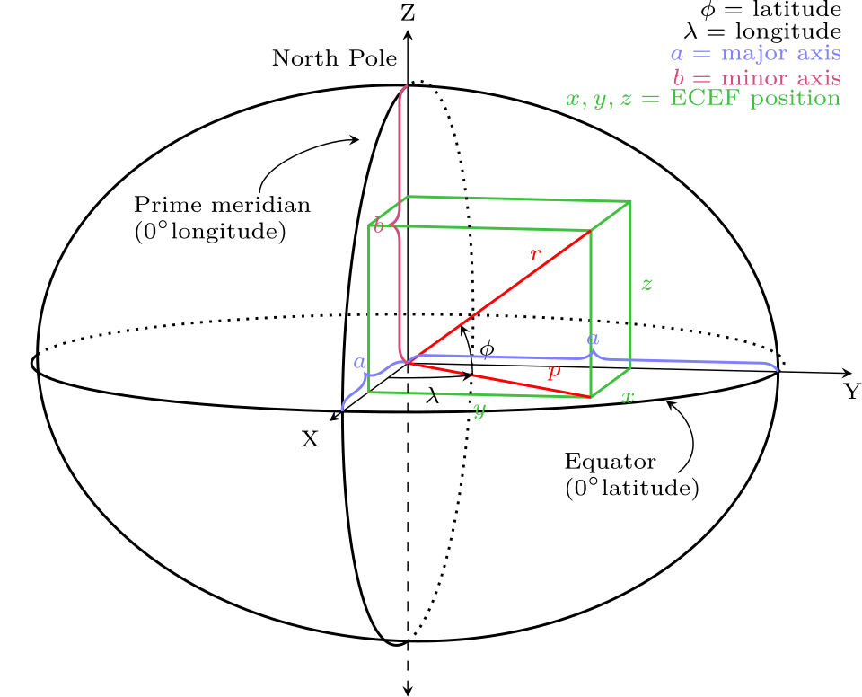
Source: Wikipedia commons
These describe the same point — conversion is exact.
Ellipsoidal → Geocentric: Section 2.2.4 has conversion formulas
Convert curved \((\varphi, \lambda)\) to flat \((E, N)\) — Easting and Northing.
We cover projections in detail in Lectures 4 and 5.
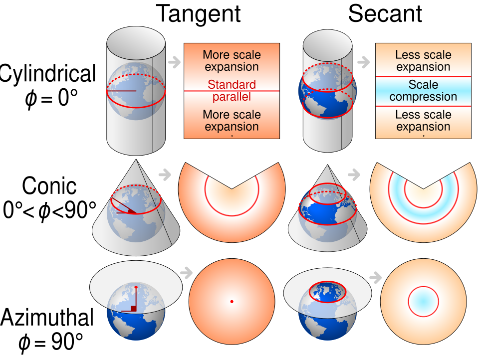
Source: Wikimedia commons
For small areas — construction sites, buildings, bridges.
Must be connected to a global CRS to integrate with other data.
GPS gives ellipsoidal height \(h\) — height above the ellipsoid.
We usually want orthometric height \(H\) — height above the geoid (“sea level”).
\[h = H + N\]
where \(N\) is the geoid undulation (geoid height above/below the ellipsoid).
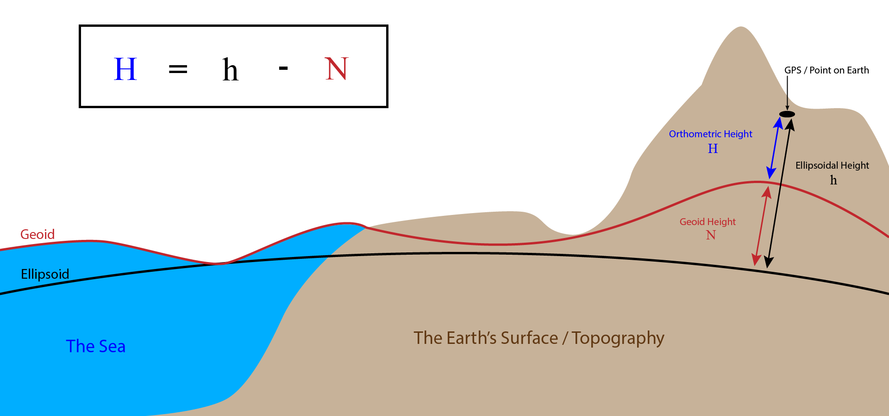
A coordinate system is abstract — floating in mathematical space.
A datum anchors it to the real Earth.
It defines:
Same coordinate system, no anchor → coordinates are meaningless.
With a datum → every number refers to a specific place on Earth.
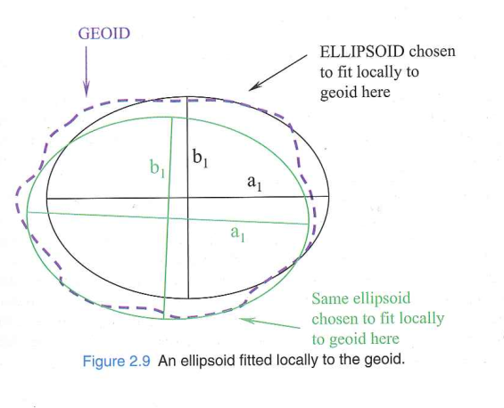
Source: Iliffe, Jonathan , and Roger Lott . 2008. Datums and Map Projections for Remote Sensing, GIS, and Surveying. Whittles Pub. CRC Press, Scotland, UK.
A geodetic datum specifically anchors an ellipsoid to the Earth for defining latitude and longitude.
Two ingredients:
Steps to realise a local datum:
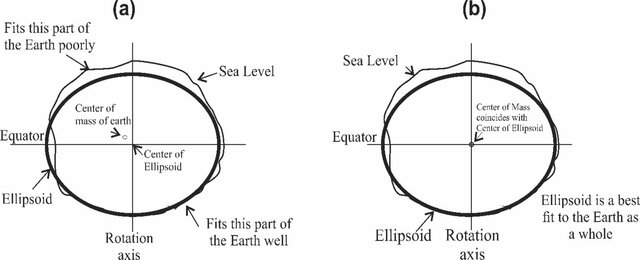
Source: Kalu, I., Ndehedehe, C. E., Okwuashi, O., & Eyoh, A. E. (2022). A comparison of existing transformation models to improve coordinate conversion between geodetic reference frames in Nigeria. Modeling Earth Systems and Environment, 8(1), 611-624.
Satellites see the whole Earth → we can locate the centre of mass.
Steps to realise a geocentric datum:
Result: consistent worldwide, no regional bias.
| Datum | Ellipsoid | Type | Region |
|---|---|---|---|
| DHDN | Bessel 1841 | Local | Germany |
| ED50 | International 1924 | Local | Europe |
| NAD27 | Clarke 1866 | Local | North America |
| NAD83 | GRS 80 | Geocentric | North America |
| ETRS89 | GRS 80 | Geocentric | Europe |
| WGS 84 | WGS 84 | Geocentric | Global |
\[\boxed{\text{CRS} = \text{Coordinate System} + \text{Datum}}\]
The coordinate system defines how numbers work.
The datum defines where they point.
Together: unambiguous positions on Earth.
All use ellipsoidal coordinates (latitude °, longitude °) — but different anchors.
| CRS | Datum | EPSG |
|---|---|---|
| WGS 84 geographic | WGS 84 | 4326 |
| ETRS89 geographic | ETRS89 | 4258 |
| ED50 geographic | ED50 | 4230 |
Münster in each:
| CRS | Latitude | Longitude |
|---|---|---|
| WGS 84 | 51.96885° | 7.66508° |
| ED50 | 51.96961° | 7.666295° |
Same point. Different numbers. Different datum.
All anchored to WGS 84 — but numbers assigned differently.
| CRS | Coord. System | EPSG |
|---|---|---|
| WGS 84 geographic | lat/lon (°) | 4326 |
| WGS 84 geocentric | X, Y, Z (m) | 4978 |
| WGS 84 / UTM 32N | E, N (m) | 32632 |
Same point, same datum, different numbers.
International Terrestrial Reference System
This is a theoretical definition — a set of conventions on paper.
International Terrestrial Reference Frame
The physical realisation: actual coordinates and velocities of real stations.
Built from four observation techniques: VLBI, SLR, GNSS, DORIS
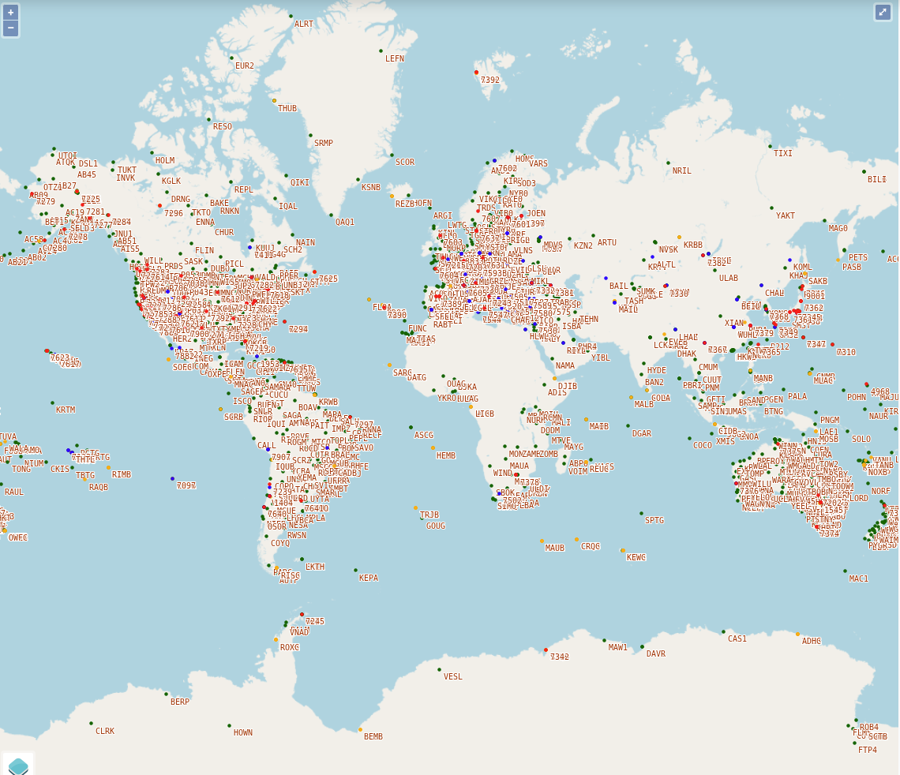
[Source: https://itrf.ign.fr/en/network/map] {.small}
| Realisation | Reference epoch | Released |
|---|---|---|
| ITRF2000 | 1997.0 | 2001 |
| ITRF2005 | 2000.0 | 2007 |
| ITRF2008 | 2005.0 | 2010 |
| ITRF2014 | 2010.0 | 2016 |
| ITRF2020 | 2015.0 | 2022 |
Each includes station velocities — because plates move.
Coordinates are only valid at the reference epoch.
Problem: in ITRF, European stations drift ~2.5 cm/year northeast.
Solution: ETRS89 — a reference frame that moves with the Eurasian plate.
| Property | Value |
|---|---|
| Ellipsoid | \(a\) = 6,378,137 m, \(1/f\) = 298.257223563 |
| Origin | Earth’s centre of mass |
| Maintained by | US NGA (National Geospatial-Intelligence Agency) |
| Realised through | GPS satellite orbits + ~17 tracking stations |
The “G” number is the GPS week number when the realisation became operational.
WGS 84 is periodically re-aligned to the latest ITRF:
The values \(\varphi = 51.969°\), \(\lambda = 7.665°\) are just numbers.
Their meaning depends on:
The same physical point — different lat/lon depending on the datum:
| From → To | shift |
|---|---|
| ED50 → WGS 84 (Münster) | 118.9 m |
| NAD27 → NAD83 (New York) | 36.4 m |
| DHDN → ETRS89 (Münster) | 163 m |
| ITRF2014 epoch 2010 → epoch 2025 | 40 cm (2.5 cm per year) |
| WGS 84 (1990) → WGS 84 (2024) | ~1–2 m (documented) |
Without knowing the datum, coordinates are ambiguous.
The Earth is not mathematical → we approximate with geoid and ellipsoid
A coordinate system defines axes, units, directions — but is abstract
A datum anchors the coordinate system to the real Earth
CRS = Coordinate System + Datum — the complete package
Local datums (pre-satellite) → geocentric datums (post-satellite)
ITRF is the most accurate global frame; ETRS89 is Europe’s plate-fixed version
WGS 84 is periodically aligned to ITRF but has multiple realisations
Latitude and longitude are not unique without specifying the CRS
https://www.youtube.com/watch?v=kXTHaMY3cVk
https://www.youtube.com/watch?v=ZFe_rZccGOQ
Read Chapter 3 of “datums and map projection” (1st edition) and sections 2.3.4 to 2.5.2 of the coursebook
Think about:
Submit questions to Learnweb by Wednesday noon.